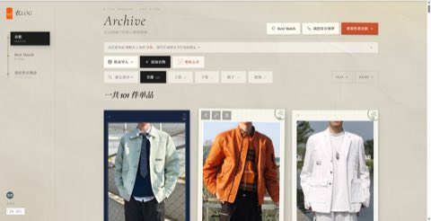
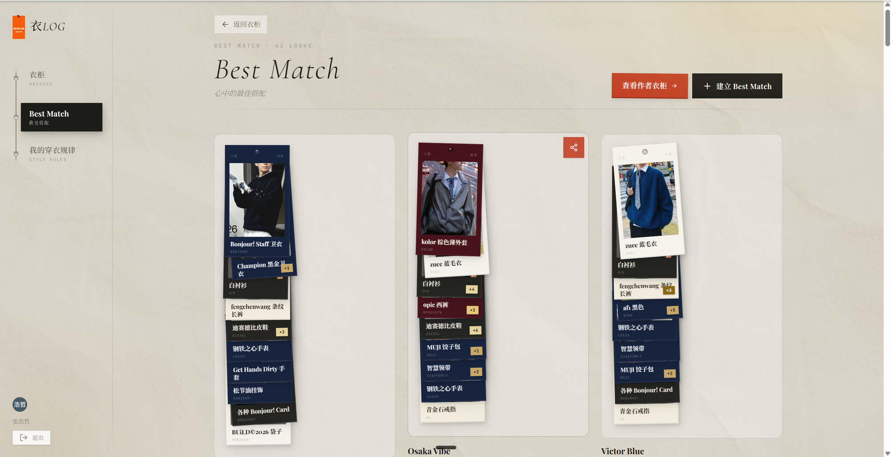
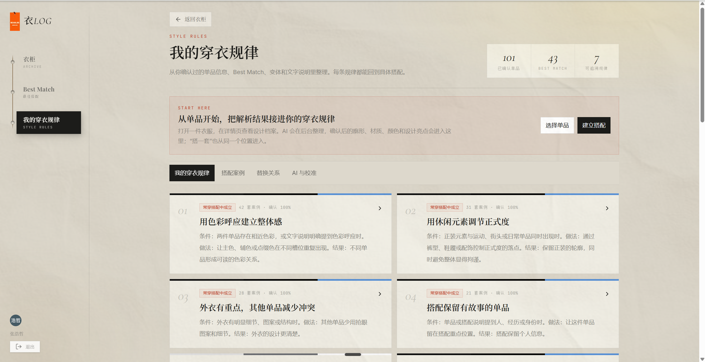
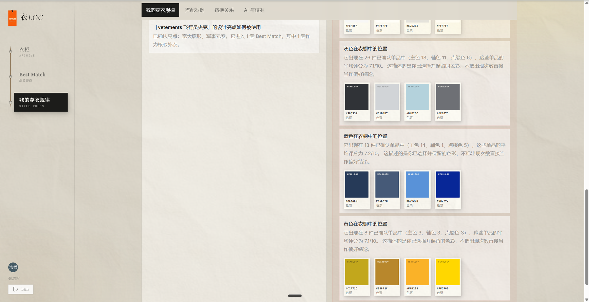

衣
≡
四个核心界面
一座衣柜的档案馆：每件衣服一张档案卡，搭配成为可复用的判断，规律从记录里长出来。
React 19 · TS · Vite · Tailwind v4 · Motion
Supabase · Vercel · Kimi relay ｜ wearlog.cn 线上可访问
界面：
Archive
Best Match
穿衣规律
颜色分析

01
Archive 衣橱

02
Best Match 搭配

03
穿衣规律

04
颜色分析
84 次
Git 提交
约 8,000 行
代码
约 100 人
使用过
WEARLOG.CN · P.19